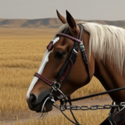
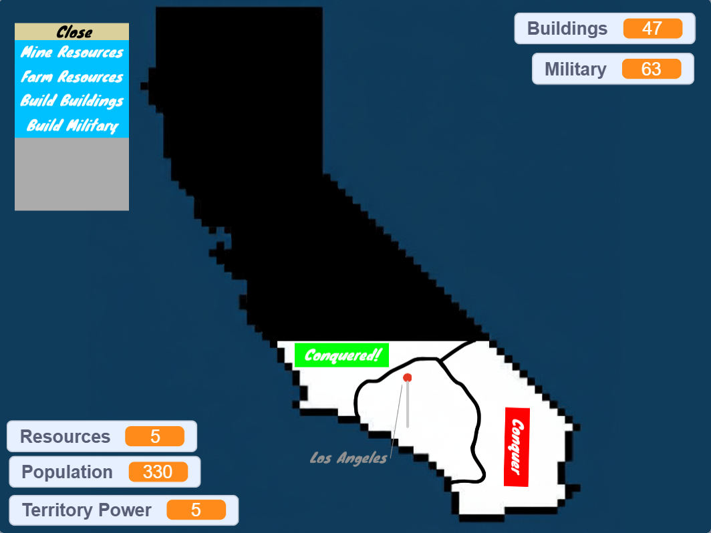
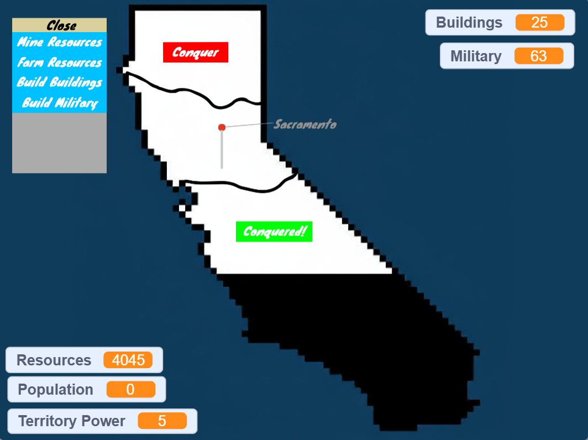
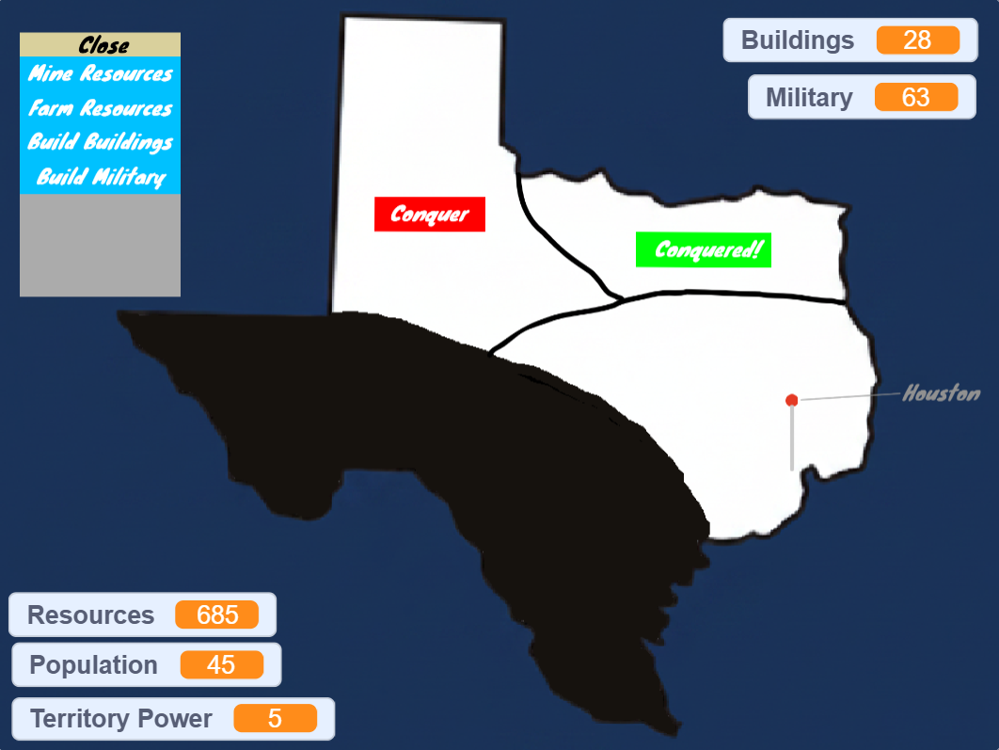
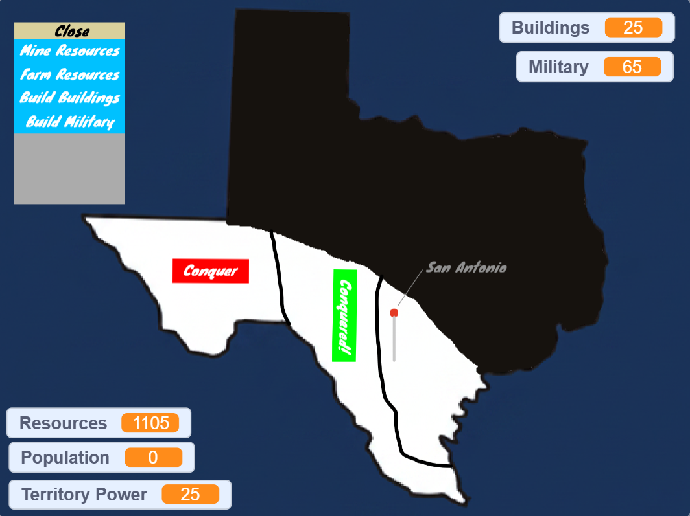

American Territory Conqueror is a strategy map game where the player chooses their state and city to start with, gather resources, build buildings and objects mandatory to their territory, and conquer territories themselves or within an alliance. The important features of this game that would make our game stand out well includes player and computer controlled territories, a set of different types of strategies for conquering, and alliances where multiple territories can team up together in each alliance. There is no storyline in the game but the player's or alliance's main goal is to conquer all territories of the 50 U.S. states.
The prototype version of this game is now available to play on Scratch, but the full version of this game will be planned to be released on the itch.io website.




Team Bio - Me and Tristan are the important members who are in charged of our game development team. Our objectives as project leaders is that we make sure that we frequently check progress of development for each member of our team to see how they are doing with following the roadmap scheudle. As developers who we worked together to work towards creating this game, we made sure that we stay determined and focused so that our game would look cool. We thank our audience for visiting this website and playing our game!
Team goals and inspirations - Our main important goals for our development team is ensuring that we works towards to complete the game through monitoring and helping our team members. Another goal for each team member is that we need to make sure that we stay focused and on-task so that the game development process goes efficient and productable. Our inspirations in our team include having each team member share in our Discord and also implementing those ideas if we agreed to put them in-game. Motivation is the primary driving tool for our team since this helps against our procrastination and thinking skills.